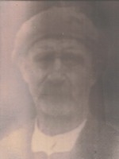
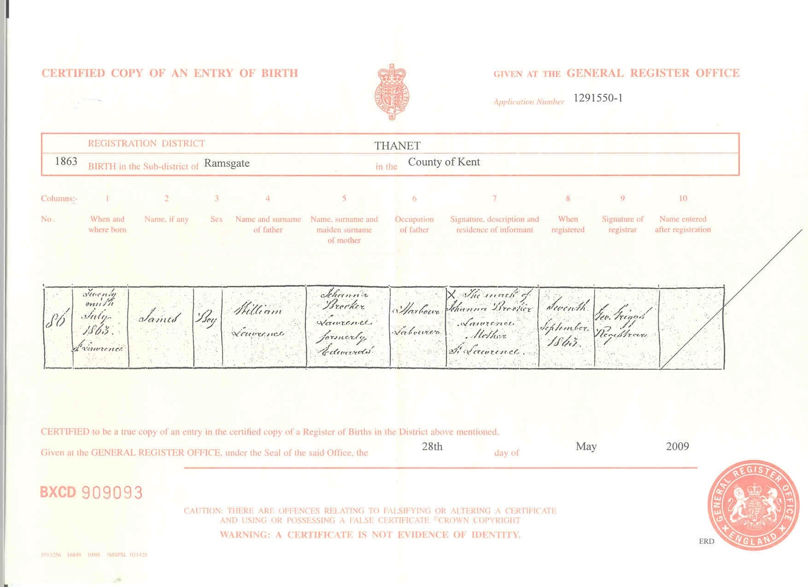
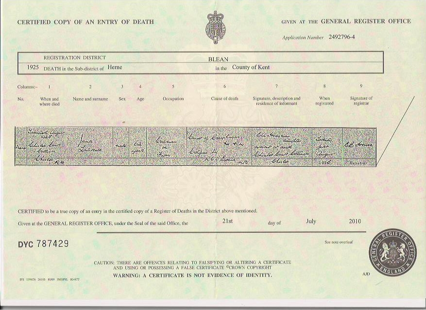
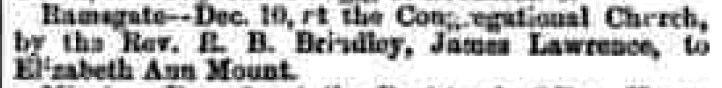
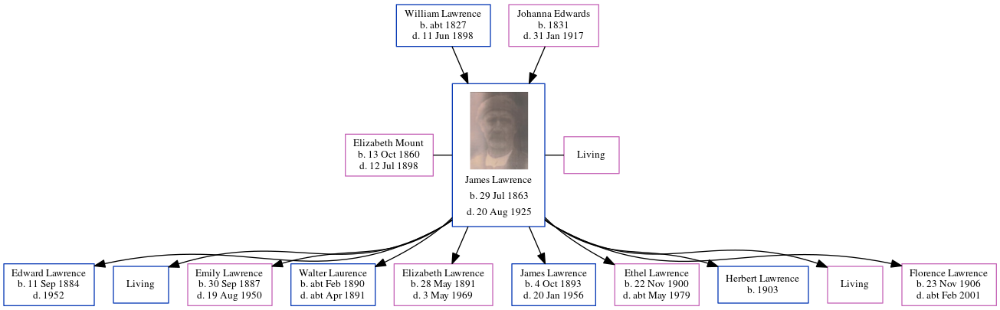

James Lawrence 1863 - 1925
[ Home ] | [ Calendar ] | [ Surnames Index ] | [ Census Index ] | [ Family History ]An agricultural laborer and the child of William Lawrence (a harbor laborer) and Johanna Edwards, James Lawrence, the great-grandfather of Nigel Horne, was born in St Lawrence, Thanet, Kent, England on Jul 29, 18631,2,3,4,5, was baptized there on Sep 13, 1863 was married twice - to Elizabeth Mount (on Dec 10, 1882 in Ramsgate, Kent, England) Mary Baker (in Apr/may/jun 1899 in Thanet, Kent, England, following the death of Elizabeth Ann on Jul 12, 1898)7. He had 10 children: Ethel May, Herbert and Florence Eva with Mary Ann Elizabeth; and Edward James S, Emily Jane, Walter Charles, Elizabeth Annie and James Thomas with Elizabeth Ann, and 2 surviving children.
During his life, he was living at Rear of Southwood Lodge, St Lawrence, Thanet, Kent on Apr 2, 18718; at 10 Claremont Gardens in Ramsgate on Apr 5, 18919; in Staple, Kent, England on Mar 31, 190111 following the death of his wife on Jul 12, 1898; and at 2 Oast Cottage, Cleve, Monkton, Kent on Apr 2, 191110.
He died on Aug 20, 1925 in Chislet Court Cottages, Chislet, Kent6 (cancer of the esophagus).
Parents
- William was born c. 1827
- Johanna Brooker was born in 1831
Children
- Edward James S was born on Sep 11, 1884
- Emily Jane was born on Sep 30, 1887
- Walter Charles was born c. Feb 1890
- Elizabeth Annie was born on May 28, 1891
- James Thomas was born on Oct 4, 1893
- Ethel May was born on Nov 22, 1900
- Herbert was born in 1903
- Florence Eva was born on Nov 23, 1906
Citations
- 1871 England Census Online publication - Provo, UT, USA: The Generations Network, Inc., 2004.Original data - Census Returns of England and Wales, 1871. Kew, Surrey, England: The National Archives of the UK (TNA): Public Record Office (PRO), 1871. Data imaged from the National
- 1891 England Census Online publication - Provo, UT, USA: The Generations Network, Inc., 2005.Original data - Census Returns of England and Wales, 1891. Kew, Surrey, England: The National Archives of the UK (TNA): Public Record Office (PRO), 1891. Data imaged from The National
- 1901 England Census Online publication - Provo, UT, USA: The Generations Network, Inc., 2005.Original data - Census Returns of England and Wales, 1901. Kew, Surrey, England: The National Archives of the UK (TNA): Public Record Office (PRO), 1901. Data imaged from the National
- 1911 England Census Online publication - Provo, UT, USA: Ancestry.com Operations, Inc., 2011.Original data - Census Returns of England and Wales, 1911. Kew, Surrey, England: The National Archives of the UK (TNA), 1911. Data imaged from the National Archives, London, England.
- England & Wales, FreeBMD Birth Index, 1837-1915 Online publication - Provo, UT, USA: The Generations Network, Inc., 2006.Original data - General Register Office. England and Wales Civil Registration Indexes. London, England: General Register Office. © Crown copyright. Published by permission of the Cont
- England & Wales, Death Index: 1984-2005 Online publication - Provo, UT, USA: The Generations Network, Inc., 2007.Original data - General Register Office. England and Wales Civil Registration Indexes. London, England: General Register Office. © Crown copyright. Published by permission of the Cont
- England & Wales, FreeBMD Marriage Index: 1837-1915 Online publication - Provo, UT, USA: The Generations Network, Inc., 2006.Original data - General Register Office. England and Wales Civil Registration Indexes. London, England: General Register Office. © Crown copyright. Published by permission of the Cont
- 1871 England, Wales & Scotland Census - Findmypast (was age 7 and the son of the head of the household)
- 1891 England, Wales & Scotland Census - Findmypast (was age 28 and the head of the household)
- 1911 Census for England & Wales - Findmypast (was age 47 and the head of the household)
- 1901 England, Wales & Scotland Census - Findmypast (was age 38 and the head of the household)
Media
James Lawrence and Elizabeth Ann Mount - Marriage Certificate

James Lawrence

James Lawrence - birth certificate

James Lawrence - death certificate

Thanet Advertiser - 16 Dec 1882

England & Wales marriages 1837-2008 - BMD/M/1882/4/AZ/000230/309
England & Wales births 1837-2006 - BMD/B/1863/3/AZ/000717/143
1891 England, Wales & Scotland Census - GBC/1891/0005908271
England & Wales marriages 1837-2008 - BMD/M/1882/4/AZ/000198/077
England & Wales deaths 1837-2007 - BMD/D/1925/3/AZ/000474/010
England Births & Baptisms 1538-1975 - R_885343287
Kent Baptisms - GBPRS/CANT/B/96404370
Family Tree
Generated by ged2site. Last updated on Jun 11, 2024